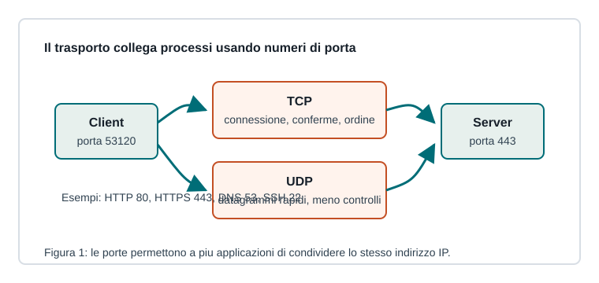

Capitoletto 2.4
Livello di trasporto
Il livello di trasporto collega processi applicativi su host diversi e permette a molte comunicazioni di condividere la stessa rete.

Porte e socket
Un host può eseguire molte applicazioni di rete nello stesso momento. Le porte permettono di distinguere a quale processo consegnare i dati. La combinazione indirizzo IP, protocollo di trasporto e porta forma un endpoint di comunicazione.
Un socket è l'astrazione software usata dai programmi per inviare e ricevere dati attraverso la rete.
TCP
TCP è orientato alla connessione. Prima dello scambio dati stabilisce una relazione logica tra client e server, poi controlla ordine, ritrasmissioni, perdite e flusso. È adatto quando l'integrità dei dati è più importante della latenza minima.
| Caratteristica | Effetto |
|---|---|
| Numeri di sequenza | ricostruzione ordinata del flusso |
| ACK | conferma di ricezione |
| Ritrasmissione | recupero dei segmenti persi |
| Controllo di flusso | evita di saturare il destinatario |
UDP
UDP invia datagrammi senza stabilire una connessione e senza garantire consegna o ordine. È più leggero di TCP e viene usato quando l'applicazione può tollerare perdite o gestire da sola i controlli necessari.
DNS usa spesso UDP per richieste rapide; streaming, giochi online e VoIP possono preferire UDP perché un ritardo eccessivo è peggiore della perdita di qualche dato.
Multiplexing
Il multiplexing permette a comunicazioni diverse di usare lo stesso host e la stessa scheda di rete. Un browser può aprire connessioni HTTPS, un client email può scaricare messaggi e un'app può sincronizzare dati: le porte mantengono separati i flussi.
Ripasso
Quando conviene TCP?
Quando servono affidabilità, ordine e controllo della trasmissione.
Perché UDP è più leggero?
Perché non stabilisce connessione e non gestisce conferme, ordine e ritrasmissioni a livello di trasporto.